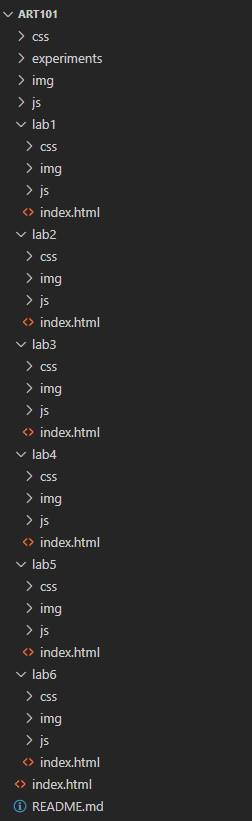
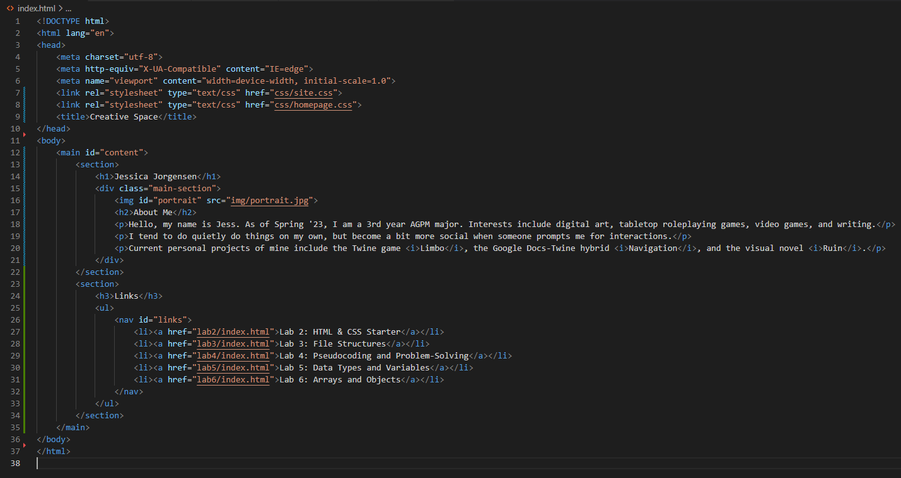
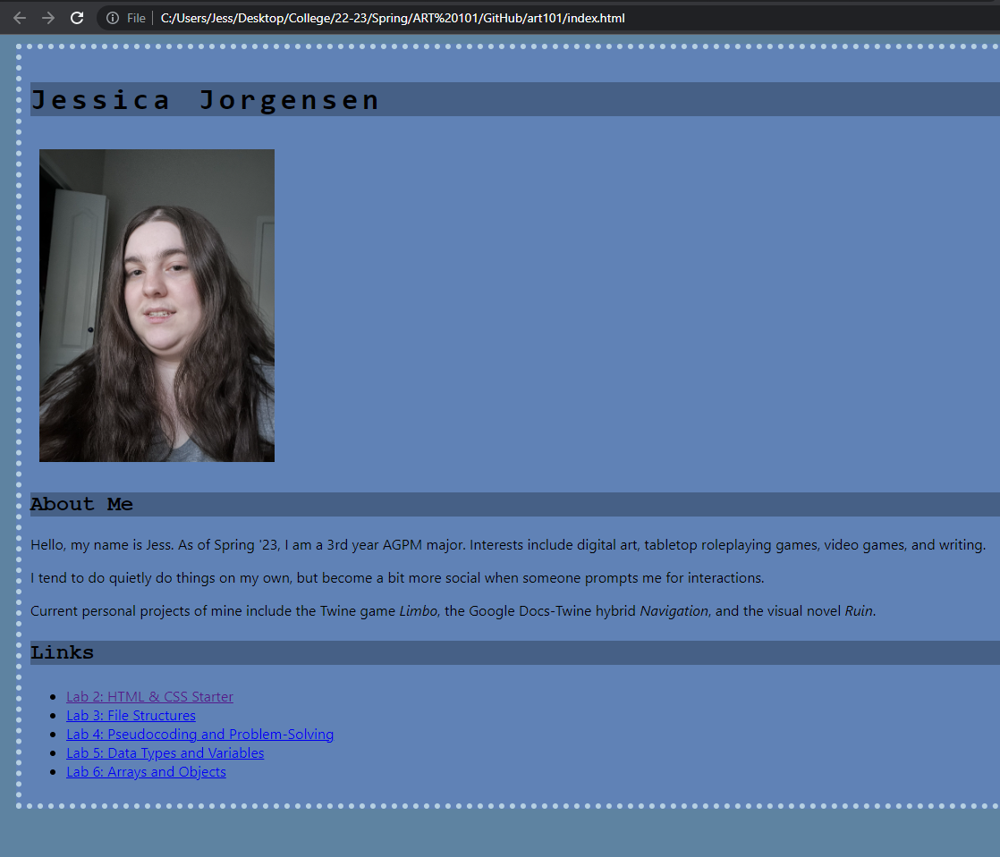
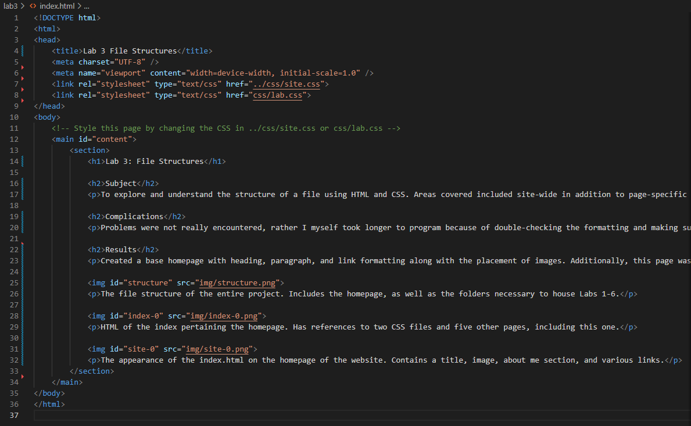
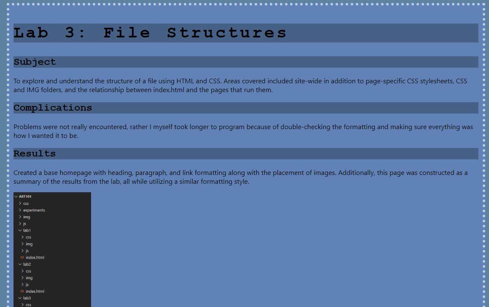

Lab 3: File Structures
Subject
To explore and understand the structure of a file using HTML and CSS. Areas covered included site-wide in addition to page-specific CSS stylesheets, CSS and IMG folders, and the relationship between index.html and the pages that run them.
Complications
Problems were not really encountered, rather I myself took longer to program because of double-checking the formatting and making sure everything was how I wanted it to be.
Results
Created a base homepage with heading, paragraph, and link formatting along with the placement of images. Additionally, this page was constructed as a summary of the results from the lab, all while utilizing a similar formatting style.
The file structure of the entire project. Includes the homepage, as well as the folders necessary to house Labs 1-6.
HTML of the index pertaining the homepage. Has references to two CSS files and five other pages, including this one.
The appearance of the index.html on the homepage of the website. Contains a title, image, about me section, and various links.
HTML of the current page, Lab 3, before the addition of this image and the next. More loosely structured.
The appearance of the index.html on the current website page for Lab 3. Has three sections and a list of screenshots.